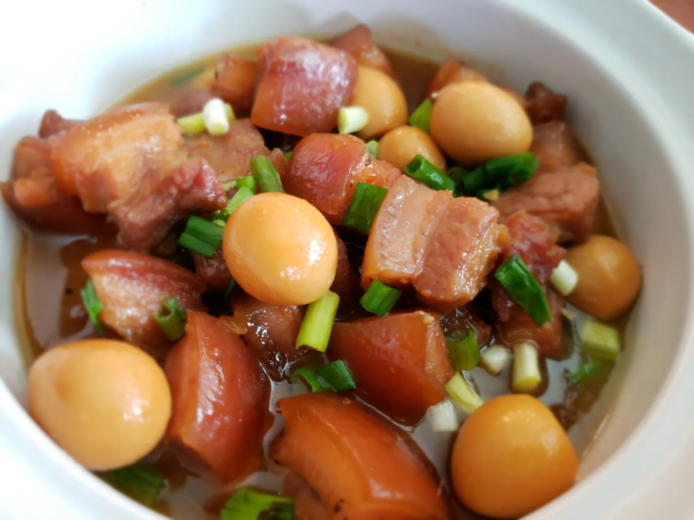

Thit Kho Tau Recipes

Home
Thit Kho Tau Recipes
Thịt Kho Tàu is a classic Vietnamese comfort dish made with pork belly and boiled eggs simmered in a savory-sweet caramelized sauce. The key ingredients include pork belly for richness, hard-boiled eggs for extra heartiness, fish sauce for deep umami flavor, coconut water to balance with natural sweetness, and sugar to create the signature amber caramel base. Aromatics like garlic, shallots, and black pepper bring warmth, while a splash of soy sauce (optional) adds depth. To cook it, the pork is first seared and caramelized with sugar until golden, then simmered gently in coconut water with fish sauce and seasonings until tender. The boiled eggs are added in to soak up the flavorful sauce, and the dish is served hot with freshly steamed rice, perfect for soaking up the rich, savory broth.
Ingredients
- 1.5 lbs (700 g) pork belly (skin-on, cut into 1–1.5 inch cubes)
- 5–6 hard-boiled eggs *or you can substitute for quail eggs. It's all personal preference but still taste the same!*, peeled
- 2 cups coconut soda (or plain water if not available)
- 2 tbsp fish sauce
- 1 tbsp soy sauce (optional, for color and depth)
- 3 tbsp sugar (for caramel sauce)
- 3 cloves garlic, minced
- 2 shallots (or ½ small onion), minced
- ½ tsp black pepper
- 1 tbsp cooking oil
- Pinch of salt
- 2 cups jasmine rice
- 2 ½ cups water (adjust depending on rice type)
Step-by-Step-Instructions
- Prepare the Rice
- Rinse rice in cold water 2–3 times until water runs clear.
- Add rice and water into a rice cooker (or pot).
- Cook until fluffy. Keep warm for serving.
- Boil the Eggs
- Place eggs in a pot of water and bring to a boil.
- Cook for 10 minutes, then transfer eggs into ice water.
- Peel and set aside.
- Pre the Pork
- Cut pork belly into cubes.
- Rinse briefly under hot water to remove impurities.
- Pat dry and season lightly with salt and pepper.
- Make the Caramel Sauce (Nước Màu)
- In a pot, heat 3 tbsp sugar with a splash of water over medium heat.
- Stir gently until it turns into a golden-brown caramel (do not burn).
- Add 1 tbsp cooking oil and mix.
- Cook the Pork
- Add pork belly into the caramelized pot and stir to coat evenly.
- Add garlic and shallots, sauté until fragrant.
- Pour in 2 cups coconut water, fish sauce, soy sauce, and a pinch of black pepper.
- Bring to a boil, then reduce heat to low and simmer uncovered for 45–60 minutes, until pork is tender.
- Add the Eggs
- Gently add peeled hard-boiled eggs into the pot.
- Simmer another 15 minutes, allowing eggs to absorb the sauce.
- Taste and adjust seasoning (fish sauce or sugar) as needed.
- Serve
- Plate steamed jasmine rice.
- Ladle pork belly and eggs with sauce over rice.
- Garnish with freshly cracked black pepper and sliced chilies (optional).
Results🍚
Tender, melt-in-your-mouth pork belly with savory-sweet caramelized sauce and eggs soaked in flavor, perfectly balanced by a hot bowl of steamed rice.